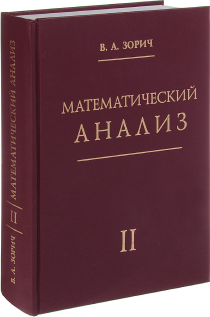

Куратор программы
Андрей Люксембург
Научный руководитель проекта MATHSEM, по совместительству ответсвенный за его создание
Планируемые результаты проекта и основная аудитория:
- Студенты, аспиранты и научные работники, интересующиеся математикой и информатикой.
- Университеты и научные организации, заинтересованные в использовании программы.
- Онлайн-обучающие платформы и курсы по дискретной математике и математической логике.
Основная математическая информация
Ниже вы можете ознакомиться с математической терминологией. Она поможет вам намного лучше разобраться в нашем творении
-
Математический анализ - раздел математики, в котором переменные величины (функции и их обобщения) изучаются с использованием пределов.
 - Предикат — любое математическое высказывание, в котором есть по меньшей мере одна переменная. Т.е. предикат — это функция с множеством значений {0,1} (или «ложь» и «истина»), определённая на некотором множестве
- Логика предикатов - раздел современной символической логики, изучающий рассуждения и др. языковые контексты с учётом внутренней структуры входящих в них простых высказываний; при этом выражения языка трактуются функционально.
Отзывы
Ниже вы можете прочесть отзывы пользователей нашей программы
-
Мне как учителю математики очень понравилось данная программа
-
Мне как учителю математики очень понравилось данная программа
-
Мне как учителю математики очень понравилось данная программа
-
Мне как учителю математики очень понравилось данная программа